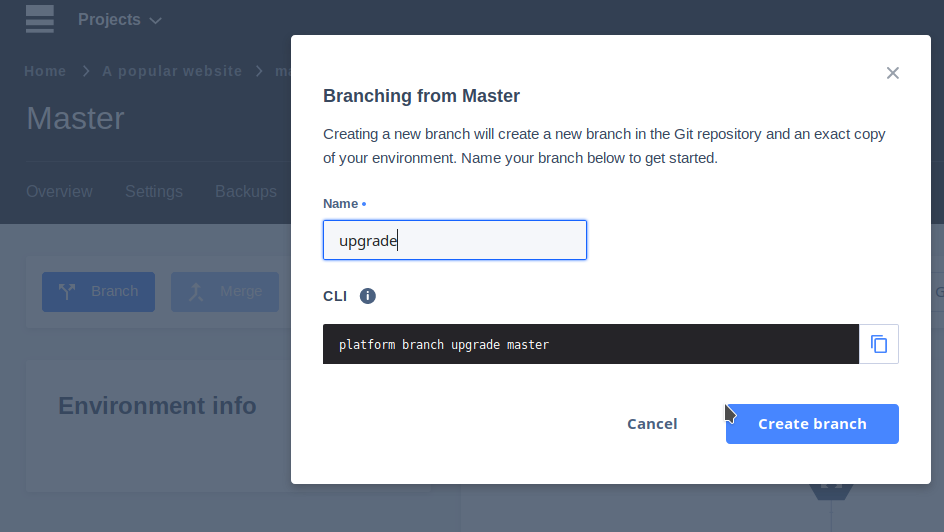
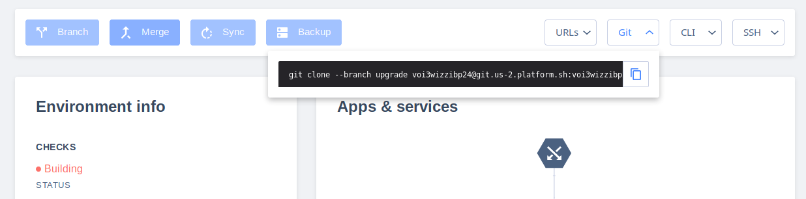
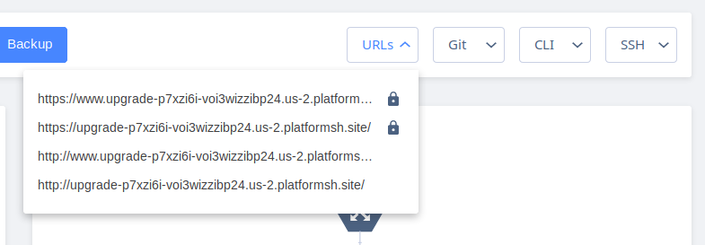
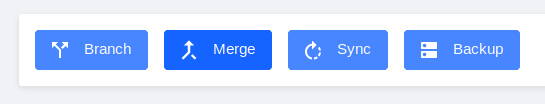

Is my application compatible with that sweet new PHP 7.3?

Create a new environment; code and all!

You can clone the whole project using Git, or the Platform.sh CLI.
Clone the project, edit one character. And git push.
The entire environment is rebuilt, now on your new version.

Do whatever testing you need, automated or manual.
Production hasn't been touched.

You know it works. You've tested it.
Deploy the exact same configuration to prod in seconds.
Most services can be trivially upgraded, too.
It works for any change, any language, any dependency.
Problem: Is my application compatible with the new PHP 7.3?
Script
Show a project in the UI.
Overlay: Changing host language versions is trivial.
Push button for new branch.
Check out branch locally.
Change one character in .platform.app.yaml.
Push, watch build.
Show site.
Overlay: Do whatever testing you need, automated or manual. Production hasn't been touched.
Go to UI.
Click Merge.
Overlay: You know it works, because you've tested it. Deploy the exact same application image in seconds!
[Note: This same script can be used for any language.]
Shows
Quickly upgrade services
Automatically resolve dependencies
Build code on Git push
Testing
YAML based configuration
Freedom to make mistakes
Reproducible environments